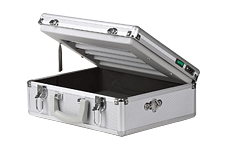
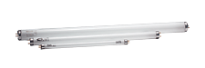
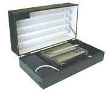

Отличия предлагаемых нами экспонирующих камер?
В чем отличие предлагаемых нами экспонирующих камер от аналогичных, представленных на рынке?
Наши модели сконструированы с учетом недостатков моделей других производителей и пожеланий покупателей.
Первое, что бросается в глаза - гораздо меньшие габариты (в 3-5 раз) и вес (не более 2-4кг против 7- 15кг) чем у отечественных аналогов. Современный эргономичный дизайн. Корпус камеры полностью защищает оператора от УФ изучения. Коротковолновое УФ-излучение даже при кратковременном прямом воздействии на органы зрения может вызвать острое заболевание слизистых оболочек глаз - электроофтальмию.
Второе - цифровой таймер. Значение выдержки устанавливается на жидкокристаллическом дисплее в привычной форме (минуты и секунды, а не сотни и десятки секунд) простым нажатием нескольких кнопок.
Третье - впервые в устройствах подобного рода применён электронный балласт для поджига ламп. За счёт этого удалось добиться:
1. Одновременного и мгновенного включения ламп, что в свою очередь избавило от необходимости прогревать экпонирующую камеру перед началом работы и, как следствие, снижения количества БРАКА при работе.
2. Снижения общего веса устройства более чем на 700 грамм.
3. Увеличения срока службы ламп
4. Возможность включения не чётного количества ламп.
Основное же отличие заключается в том, что в наших камерах применяются лампы PHILIPS. Это позволило значительно уменьшить габариты и вес камеры. Кроме того лампы PHILIPS имеют более стабильные характеристики интенсивности излучения, которые не изменяются в процессе срока службы ламп. У отечественных ламп эти характеристики могут иметь разброс от экземпляра к экземпляру более 70%. Со временем отечественные лампы "садятся" - теряют мощность светового потока, что приводит к необходимости постоянно корректировать время выдержки в большую сторону, а то и просто перегорают, в то время как PHILIPS дает на свои лампы гарантию 8000 часов непрерывной работы, а значение годовой эмиссии не превышает 10%.
Выбранная мощность ламп позволила добиться оптимальной производительности (15-20 стандартных печатей 40х40мм за один цикл, длящийся не более трех минут) при минимальных размерах. Уменьшение мощности ламп приведет к неравномерной засветке рабочей поверхности и, как следствие, большому количеству брака. Уменьшение размеров ламп приводит к появлению искажений на рисунке печати т.к. лучи света падают на негатив не перпендикулярно, а под углом. Увеличение мощности ламп приводит к неоправданному увеличению размеров камеры. Поэтому размер рабочего поля формата А3 (можно изготавливать до 60 печатей за один цикл), представляется сомнительным преимуществом и объясняется лишь тем, что отечественная промышленность не производит УФ ламп меньшего размера с удовлетворительными характеристиками. Некоторые модели, выпускаемые в последнее время, не позволяют производить упрочняющую обработку под тонким слоем воды, нарушая тем самым технологию производства печатей.
Еще одно сомнительное преимущество - двухсторонняя засветка. Реально - засветка производится поочередно с каждой стороны. То есть времени затрачивается столько же, просто отсутствует необходимость переворачивать пакет, однако очевиден проигрыш в массе и габаритах. В этих же моделях исключена возможность производить упрочняющую обработку под тонким слоем воды, что нарушает технологию производства печатей. Наша модель с двухсторонней засветкой лишена обоих этих недостатков. Засветка производиться одновремено с двух сторон. Не существует никаких препятствий для проведения упрочняющей обработки.
Вот один из образцов предлагаемой нашими конкурентами продукции:
|  |
Технические данные:
Возможность засветки фотополимера с одной стороны
Номинальное напряжение - 220 В (50 Гц)
Потребляемая мощность - не более 320 Ва
Масса - не более 18 кг
Габаритные размеры - 650х380х230 мм
Цена: 340 у.е. |
Последнее время в Сети появилось большое число ресурсов, предлагающих Вашему вниманию оборудование для изготовления печатей и штампов.
Даже при беглом знакомстве с этими ресурсами бросается в глаза то, что некоторые фразы, абзацы и даже главы являются цитатами нашего сайта. Позаимствованы даже наименования моделей.
Оценив качаство копирования на примере WEB- дизайна Вы без труда сможете предположить насколько удачно их авторы смогли повторить техническую часть.
Что же предлагают влaдельцы подобных ресурсов?
Как правило это одна модель экспонирующей камеры, изготовленная кустарным способом в которой её создатели попытались воплотить некоторые наши удачные технические решения.
Из расходных метериалов Вам предложат:
на выбор - один тип полимера (тот с которого выше прибыль) уверяя, что он самый лучший, т.к. они сами на нем работают.
вместо бордюрной ленты - оконный утеплитель. Благодаря его высоте в 4мм почти вдвое увеличивается расход полимера, что тоже на руку продавцам, а из-за его белого цвета форма по краям засвечивается быстрее т.к. он отражает УФ излучение внуть формы.
вместо лавсановой разделительной пленки Вам вообще могут предложить использовать целофан для упаковки цветов.
а в одном месте, куда мы позвонили, представившись покупателями, нас честно предупредили, что за демонстрацию работоспособности оборудования придётся заплатить, т.к. полимер стоит денег. Сколько именно, правда, не уточнили, наверное рубля 3 или 5. И это не шутка.
некоторые прдавцы оборудования вводят в заблуждение потенциальных покупателей относительно возможности использования струйных принтеров для получения негативов.
но, самое главное - для того, что бы получить сомнительное преимущество в конкурентной борьбе, в погоне за снижением себестоимости эти умельцы используют самодельные узлы: таймеры, электронные балласты. Это, конечно, поддерживает отечественного производителя, но существенно сказывается на надёжности изделия.
Кроме того Вам наверняка пообещают длительную гарантию несмотря на то, что продавцы не реже одного раза в год меняют свое местоположение и телефоны, а некоторые вообще не имеют своего офиса и продают свою продукцию из офисов дружественных компаний или на дому. Не лишне было бы поинтересоваться имеет ли предлагаемое Вам оборудование Сертификат соответсвия Полиграфическе оборудование, в часности экспонирующие камеры подлежат обязательной сертификации! Так же следует поинтересоваться: вернут ли Вам деньги, в случае, если продукция по каким либо причинам не устроит Вас.
В итоге: к нам очень часто обращаются обладатели экспонирующих камер непонятного производства за расходными материалами, разъяснениями, а то и с просьбами купить у них эти поделки хоть за какие-нибудь деньги. Самое интересное, что обращаясь к мелким продавцам оборудования для изготовления штемпельной продукции Вы не выигрываете в деньгах, но ограничиваете себя в выборе.
С нами Вы сможете даже сэкономить, благодаря гибкой системе скидок.
Менеджеры нашей компании всегда смогут подобрать оптимальный для решения Ваших задач вариант благодаря тому, что у нас представлен полный ассортимент оборудования и расходных материалов для производства штемпельной продукции по ВСЕМ используемым на сегодняшний день технологиям.
Выбор по-прежнему остается за Вами!
 Оборудование для изготовления печатей и штампов Оборудование для изготовления печатей и штампов
Информация
|